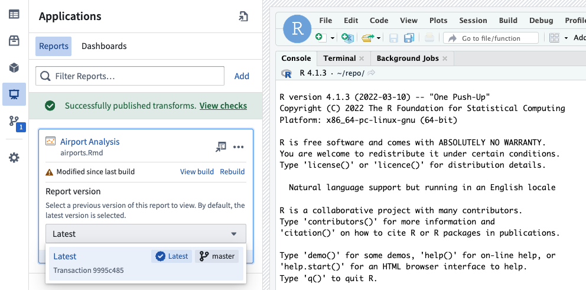
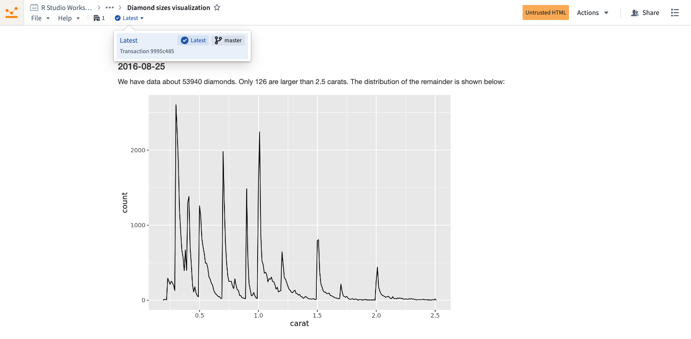

:::callout{theme="neutral"} To use RStudio® Workbench, your platform administrator must first configure its operational license in Control Panel. If you are a platform administrator and are unable to configure licenses in Control Panel, contact Palantir Support. :::
Code Workspaces enables you to use RStudio® Workbench â in Foundry. RStudio® Workbench in Code Workspaces supports:
Code Workspaces currently supports Shiny® â for R applications. Users can create applications directly in Code Workspaces with Foundryâs version control, branching, and data governance features built-in.
:::callout{theme="neutral"} Code Workspace applications support branching. If you create a new Workspace branch, publishing a new application or synchronizing the changes will publish a new version of the application on that branch. This allows you to preview your application before exposing it to your users. To publish on the master branch, simply merge your branch into master. :::
With Code Workspaces, you can create a Shiny® application and preview it directly from the RStudio® UI.
:::callout{theme="warning"}
By default, RStudio® generates Shiny® applications in the home folder (/home/user) but Foundry requires applications to be in the git repository /home/user/repo for them to be persisted across sessions and published.
:::
In Code Workspaces, select Publish application, select a location in your Files and Projects for your new application, and enter the name of the directory in which a new Shiny® app.R file should be automatically created, relative to the repository root /home/user/repo. This field can be left blank to create the application at the root of the repository. By default, the application settings will match the RStudio® workspace settings, and configuring advanced settings is optional.
:::callout{theme="warning"} Published Shiny applications are subject to a 30-second timeout, meaning that the Shiny server must start up within 30 seconds of executing your Shiny application file. Otherwise, your Shiny application will fail to start up. :::
Select Publish and sync to register your new Shiny® application and sync the code to the backing code repository. After CI checks and publishing are complete, you can select the link in the Applications panel to view the published application.
To develop locally against a Shiny® application:
app.R in RStudio®.By default, Shiny greys out if the websocket connection is closed, for instance if there is a network outage for over 15 seconds. To ensure your application can recover when the network connection is restored, we recommend updating the server function to set session$allowReconnect("force"):
server <- function(input, output, session) {
# Handle input changes
session$allowReconnect("force")
}
This will cause the frontend to trigger a new websocket when the network is available again, and to send the last input information that was set in the UI.
:::callout{theme="warning"} R transforms currently do not support making API calls to external services, even if the network policy was added in the RStudio Code Workspace. :::
R scripts written in Code Workspaces can be registered as transforms for output datasets in Code Workspaces.
Follow the steps below to register a transform for an output dataset:

Once CI checks are completed, your transform is ready for build. You can then use other Foundry data integration tools to manage your transform and the data pipeline to which it belongs.
:::callout{theme="neutral"}
The transform does not automatically use the environment of the Code Workspace. You should install all the libraries needed at runtime at the top of the script file. The code snippet to install a library can be found in the libraries panel.
For example, to use dplyr and tidyr in your transform, add this code snippet to the top of the file:
renv::install(c("dplyr", "tidyr"))
:::
Learn more about R transforms.
RStudio® and Shiny® are trademarks of Positâ¢.
All third-party trademarks (including logos and icons) referenced remain the property of their respective owners. No affiliation or endorsement is implied.
R Markdown or Quarto files written in RStudio® workspaces can be shared with other Palantir platform users as reports. A report is a dataset built from a Markdown file using a transform that contains HTML produced by rendering the Markdown file with Quarto â.
Reports are built using transforms, so they can be configured to automatically update based on the latest changes to the Markdown file using a schedule. This ensures that your analyses and visualizations are up to date and built with a reproducible, customizable workflow that integrates with the rest of the Palantir platform.

A Markdown report can be published from an RStudio® workspace using the following steps:
.Rmd or .qmd) you wish to use to create a report. This Markdown file can read from Foundry datasets that have been added to your workspace using the data side panel.To edit or delete an existing report, select ... on the right of the report card. This will open a menu with options to edit or delete the report, and an option to copy the link to the report.
Reports support full version history. To view a previous version of a report, expand the report card in the Applications side panel or use the version selector in the page header when viewing a report in a new tab.
Selecting a report version will update the link used to share the report, enabling you to share a specific historical version of a report that will not be updated if the underlying Markdown is modified.

The latest version of a report will be selected by default, so readers of your report automatically receive the latest changes.
RStudio® conda environments can be consistently restored across RStudio® workspaces, Shiny applications, transforms, and model outputs using managed environments. Managed environments are consistent across Code Workspace workflows, eliminating the need to re-run the same renv::install command every time you restart your workspace, start a Shiny application, or run an RStudio® transform.
:::callout{theme="neutral"} This feature now includes CRAN library management through Maestro, a Foundry library management tool that seamlessly integrates with conda and CRAN to efficiently handle library installations and maintain managed environments. Newly-installed CRAN libraries will be tracked in your environment files and consistently restored across RStudio® workspaces, Shiny applications, transforms, and model outputs, improving the reproducibility of your environments. See the get started section below to enable this feature. :::
To convert library install commands to Maestro, refer to the instructions below for either conda or CRAN. With a managed environment, installed libraries in your working environment are tracked through the following files, allowing the environment to be restored to its original state across workflows:
/home/user/repo/.envs/maestro/meta.yaml: Known as the environment manifest, it contains the set of requested libraries and versions for your environment./home/user/repo/.envs/maestro/hawk.lock: Known as the environment lock file, it contains the set of resolved libraries and versions for your environment, solved from the constraints specified in the manifest. The hawk.lock file replaces conda.lock, which has been deprecated.When you sync any new code in your conda environments, the files above will be synced as well. When you start your next session, the restored code will include the maestro files and your environment will be recreated.
:::callout{theme="warning"}
We do not recommend modifying the hawk.lock lock file. Instead, rely on installation commands to update the files on your behalf. Unless there is a git conflict, you do not need to modify the meta.yaml file either; it will automatically update when libraries are interactively installed. If you do modify these files, you risk restoring an outdated conda environment or failing the environment build.
:::
Your managed environment is installed in your /home/user/envs/default folder. This environment will be restored before any of the following events:
To enable managed environments in RStudio® workspaces, navigate to your workspace settings from the left sidebar, then toggle on Managed Conda environments under Advanced features. It may already be turned on by default.
Then, restart the workspace:

To enable CRAN library management by Maestro in RStudio® workspaces, navigate to your workspace settings using the left sidebar, then toggle on Managed CRAN environments under Experimental features. This option may already be enabled by default.
Then, restart the workspace.
Follow the steps below to update your managed environment and manage new libraries:
:::callout{theme="default"} Install R libraries with conda instead of CRAN to significantly reduce workspace startup time. :::
r- prefix (for example, r-ggplot2 not ggplot2) and install.For Bioconductor libraries: Search for the lowercase library name with a bioconductor- prefix (for example, bioconductor-genomeinfodb) and install.
Install using the terminal: To install the latest version of a library, run the following command in the terminal:
bash
maestro env conda install <library_name>
To install a specific version, run the following command:
bash
maestro env conda install <library_name>==<library_version>
bash
maestro env uninstall --conda-dependencies <library_names>
ggplot2) and install.For Bioconductor libraries: Search for the library name with initial capitalization format (for example, GenomeInfoDb) and install.
Install using the terminal: To install the latest version of a library, run the following command in the terminal:
bash
maestro env cran install <library_name>
To install a specific version, run the following command:
bash
maestro env cran install <library_name>@<library_version>
bash
maestro env uninstall --cran-dependencies <library_names>
:::callout{theme="warning"}
When installing a library through the Libraries tab, the install command is executed directly in the RStudio® console rather than executed within your script or application code. Every time an install command is run, the meta.yaml manifest will be updated with your requested library, and the hawk.lock file will reflect the libraries installed in the current environment.
:::
Your installed conda libraries are visible in the Libraries tab in the left sidebar:

You can also choose to view the meta.yaml and hawk.lock files in the RStudio® interface.
hawk.lock fileAfter checking out a new branch or pulling new git changes, the contents of your hawk.lock file may change.
To synchronize your managed environment, execute the following command in your workspace terminal:
maestro env install
:::callout{theme="neutral"}
maestro is the command line interface that updates managed environments. The above command re-resolves the lock file from the manifest and installs the environment into the /home/user/envs/default folder.
:::
To resolve git conflicts in your managed environment, first delete the hawk.lock file. Navigate to the meta.yaml file to resolve any conflicts, then merge your branch.
After merging, run the maestro env install command in your terminal to regenerate the hawk.lock file and reinstall your managed environment.
To upgrade your managed environment to a more recent version, first remove the hawk.lock file. Then, delete your /home/user/envs/default folder (rm -rf /home/user/envs/default). Finally, run the maestro env install command in your terminal to regenerate your hawk.lock file. Your environment will be re-installed with upgraded library versions.
RStudio® and Shiny® are trademarks of Positâ¢.
All third-party trademarks (including logos and icons) referenced remain the property of their respective owners. No affiliation or endorsement is implied.